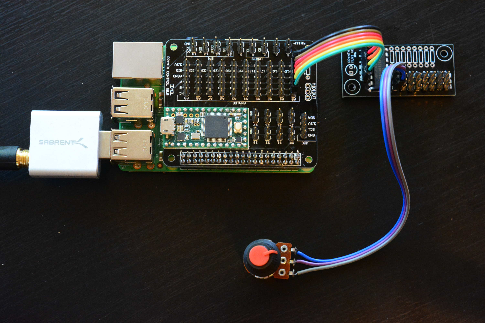

Framework
 The Prynth framework uses the Raspberry Pi (RPi) for sound synthesis and the Teensy microcontroller for sensor signal acquisition. The Teensy communicates with the RPi through an add-on board, which in turn connects to up to 10 multiplexer boards for a total 80 analog sensor connections (pots, resistors or switches). It also includes connections for digital sensors through I2C and SPI buses.
{kind=link}
With the Prynth framework, the RPi boots into a system that automatically runs a web service with a full code editor for the SuperCollider programing language. When powered the synthesizer will also automatically run a specified program.
{kind=link}
Like the original SuperCollider for desktop and laptop computers, in Prynth it is possible to execute programs on-the-fly. Just-in-time compilation allows for dynamic editing, fine-tuning or complete repurpose of the synthesizers, without going through any compilation stage or processing interruption.
The Prynth editor also contains many more handy features, such as file managers, sensor configuration panels, real-time system report and a SuperCollider debug window.
{kind=link}
Prynth can use any audio device that works with the Raspberry Pi, including I2S cards and class-compliant USB 2.0 cards.
Features
- PCBs with mostly through-hole components (easy to manufacture and solder).
- Ready-to-use Linux distribution with minimal configuration necessary.
- Web-based code editor with debugger.
- Just-in-time compiling.
- Patch and sample management.
- Sensor configuration panel.
- System Status panel.
BOM
For the typical application your bill of materials should be something like:
- Raspberry Pi (2 or 3) (adafruit, sparkfun).
- Teensy (3.1 or 3.2) (adafruit, sparkfun).
- I2S audio card or class-compliant USB 2.0 audio card (adafruit, Audio Injector, Fe-Pi).
- Prynth electronics boards (downloads).
- 8-channel analog multiplexers compatible with the 4051 pin scheme (up to 8 units, depending on the required number of analog input channels). Tested with the Max4617CPE. (arduino).
- Micro SD Card (at least 4 Gb, class 10 preferred) (adafruit, sparkfun).
- 2 x 20 female GPIO header (adafruit).
- Male and female headers 0.1’’.
- Female jumper wire (adafruit).
- Any analog sensor or switch (10K recommended for variable resistors).
- Micro-USB power supply with 2.4 A.